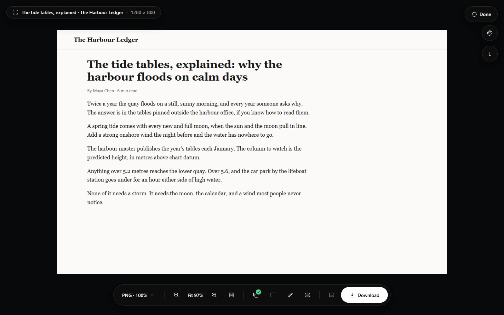

Turn it on
Switch on Clean up page in the popup, just above Pick elements to leave out. It stays on for every capture until you switch it off, in every mode except Video. You can hide the switch under Settings → Features.
What it leaves out
They are left out of the image and its text, and the page closes up where they were. Ads that load only once the page scrolls are left out as they arrive.

- Ads: ad slots from the common ad networks, frames served by ad companies, boxes a site names as ads, and anything labelled Advertisement or Sponsored, together with the label above it.
- Cookie and consent banners, from about 20 consent tools, and any pinned notice that talks about cookies or consent and has a button to press.
- Chat bubbles from about 20 chat services, such as Intercom, Zendesk and HubSpot.
What it never touches
The page itself, its main content, an article, its header or navigation, and anything covering most of the page are never left out, whatever they are called. It never presses Accept or Reject on a cookie banner, so your choices on the site stay as they were.
With Pick elements to leave out
Clean up page runs first. With both on, the picker opens on the page already cleaned up, so you only click what it missed, such as a promoted post that looks like the rest of the page.